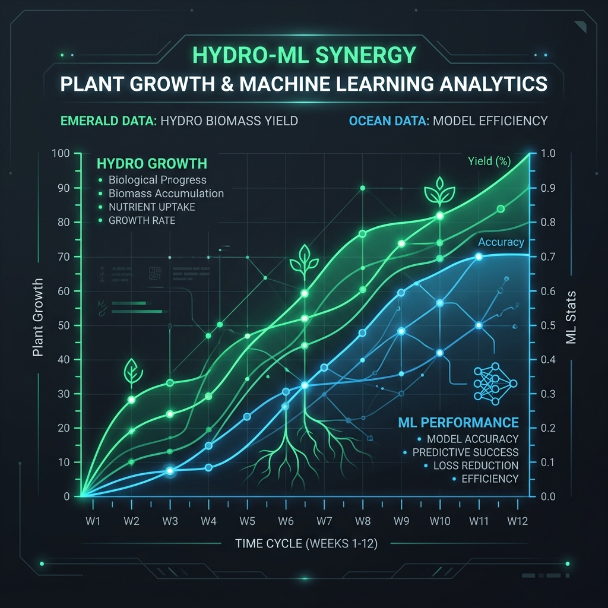

Hi, I'm Risha Setty
Student Researcher • Developer • Innovator
Exploring the intersection of hydroponics, machine learning, and computer science to build sustainable and adaptive solutions for the future.
Education & Background
Newark Charter Sr. High School
Junior • Cumulative Weighted GPA: 4.6
Relevant Coursework
Upcoming Coursework
Experience & Leadership
Research & Science
AP Research Project - Hydroponics & ML
2025 - 2026- Designed hydroponic experiments integrated with machine learning models to predict plant growth outcomes.
- Conducted iterative experiments, statistical analyses, and literature review to refine predictions.
University of Delaware - Hydroponics Research
Summer 2025- Investigated water-efficient hydroponic growing systems and analyzed crop yield data.
- Collaborated with postdoctoral researchers on experimental design and data collection.
Leadership & STEM
Founder - Peer Mentoring Club
2025 - PresentCreated a mentoring program for incoming freshmen. Coordinated pairings and training sessions.
Student Council Exec. VP
2026 - 2027Progressed through roles: Treasurer ('23-'24), VP ('24-'25), Secretary ('25-'26), Exec VP ('26-'27).
STEM Honors
Multiple Years- NCWIT Aspirations in Computing - Affiliate Winner ('25, '26)
- Girls Who Code SIP Program ('24)
- BPA National Qualifier (UX Design) ('26)
Design Projects
NECS Promotional Landing Page
A professional promotional website designed and developed for the Business Professionals of America (BPA) User Experience competition.
Visit SiteNECS Mobile App Prototype
An interactive mobile application prototype designed alongside the promotional campaign, emphasizing intuitive mobile UX and interface design.
View PrototypeResearch Deep-Dive
Hydroponics & Machine Learning: Predictive Modeling
An investigation into replacing traditional fixed-threshold hydroponic monitoring with predictive Machine Learning models driven purely by simple water-quality sensors (pH, EC, TDS).
The Gap
Fixed-threshold systems maintain environments in stable ranges (e.g. pH 5.5-6.5) but assume all plants act the same. While AIoT exists, it relies on costly image/heavy sensor networks.
The Method
Tested Random Forest and Gradient Boosting algorithms on limited pH, EC, and TDS data collected twice weekly regarding lettuce plant growth.
The Results
ML models significantly outperformed fixed-threshold systems (Gradient Boosting MAE of 5.31 cm vs 8.92 cm). Proves low-cost sensor data is viable for smart-agriculture.

Get In Touch
Interested in collaborating on research, or discussing tech and innovation? Let's connect.